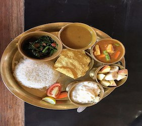
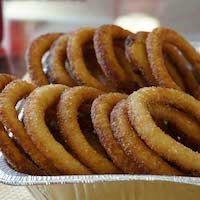
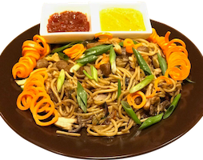

Welcome to our Nepali Resturant
Nepali/Nepalese cuisine comprises a variety of cuisines based upon ethnicity, soil and climate relating to Nepal's cultural diversity and geography. Dal-bhat-tarkari (Nepali: दाल भात तरकारी) is eaten throughout Nepal.
Dal is a soup made of lentils and spices, served over boiled grain, Bhat usually rice but sometimes another grain, and a vegetable curry, tarkari. Condiments are usually small amounts of spicy pickle achaar (अचार) which can be fresh or fermented, and of which there are a considerable number of varieties. Other accompaniments may be sliced lemon (nibuwa) or lime (kagati) with fresh green chilli (hariyo khursani). Dhindo
Dhido (ढिंडो) is a traditional food of Nepal.
More Information
Much of the cuisine is variation on Asian themes. Other foods have hybrid Tibetan, Indian and Thai origins. Momo—Tibetan style dumplings with Nepali/Nepalese spices—are one of the most popular foods in Nepal. They were originally filled with buffalo meat but now also with goat or chicken, as well as vegetarian preparations.Special foods such as sel roti, finni roti and patre are eaten during festivals such as Tihar.
Chow mein a Nepali favorite in modern times based on Chinese-style stir fried noodles. It is one of the mostbeloved everyday staple lunch in Nepali/Nepalese household today.
